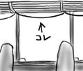
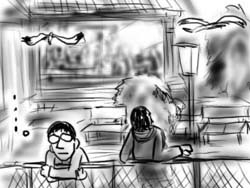

今日から，まさしろさんの家に泊めてもらっています．
近くに銭湯があるのがとてもいいです．銭湯のある通りには，なぜか意味も無く松本零士の絵が使われた看板が立っています．家の周りに，会員制スナックが異常に多いことを嬉しそうに紹介されました．あと，いきなりコンビニで「暴君ハバネロ」を買わされました(スナック違い)．
ハバネロは翌日の朝ご飯になりました．
今日から，まさしろさんの家に泊めてもらっています．
近くに銭湯があるのがとてもいいです．銭湯のある通りには，なぜか意味も無く松本零士の絵が使われた看板が立っています．家の周りに，会員制スナックが異常に多いことを嬉しそうに紹介されました．あと，いきなりコンビニで「暴君ハバネロ」を買わされました(スナック違い)．
ハバネロは翌日の朝ご飯になりました．
帰省一日目．平日なので誰かが出迎えに来てくれるわけもなく．
モスバーガーに入って照り焼きバーガーを頼んだら，ものすごく小さくて，軽くて，腰が抜けるほど驚きました．母さん，僕はこの半年で取り返しのつかないところまで来ていたようです．
ネットが使い放題という理由で選んだホテルは，驚くほど狭くて，スーツケースがちゃんと広げられませんでした．ガリバー旅行記？
今日から冬休みです．一人で２週間半も家に籠っていると気が狂いそうなので，日本に帰ります．
空港へは公共交通機関であるところのメトロバスを利用したのですが，「次とまります」ボタンもないし，車内アナウンスもないし，バスはどんどん裏道へ入って行った挙げ句に，空港と逆方向へ曲がり始めるし，不安で不安で仕方ありませんでした．
僕があまりにも不安そうだったのか，運転手のおっちゃんが親切に「まだ座ってろ」とか「もうちょっと先」とか教えてくれました．降りた後も「この先でターミナル行きのシャトルバスに乗れる」とか全部教えてくれました．不安そうな顔はするものだなぁ．まぁ実際は，同乗していた陽気な中国人(サラリーマン風)が，あることないこと僕に吹き込んでいたせいだと思いますけど．あやうく，かなり手前で下車するところでした．なにすんねん．
空港で調子に乗ってオムレツ朝食を食べたら，たいそう胃にもたれて，ろくに機内食が食べられませんでした．
おまけ：メトロバスは窓枠に沿って這わされている紐を引っ張ると「次とまります」ブザーがなります．カーテンレールに擬態しているので気づきません．
今日は，会社の企画でクリスマス・ランチ・パーティが催されます．
オフィスで仕事をしていると，同僚のKhanhが「今日，車がないからパーティ会場まで乗せて行ってくれ」と頼みに来ました．僕は会場の位置がよく分かっていなかったので，これは渡りに船とばかりに快諾．Khanhの道案内で，パーティ会場のレストランまで移動します．
会場で同僚達とバイキング形式の料理をパクついていると，「これからプレゼント交換を始めます」という恐るべきアナウンスが流れました．みんながテーブル下からプレゼントを取り出し始めています．なんですと！そんなの知らない！
パーティ案内をいい加減に読み飛ばしていたのがマズかったのか．さっそく場違いぶりを発揮してあせる僕に，Khanhの姿がフラッシュバックしました．そうだ，彼はオフィスを出る時にプレゼントなんか持っていなかったぞ！
プレゼント交換が本格的に始まったテーブルを離れてKhanhの姿を探します．Khanhは，会場の隅で所在無さげに歩いていました．khanhは，僕の姿を見つけると「帰る時に知らせてくれよ」とのんきな様子で話しかけてきます．助かった！
「とりあえず，外に行こう」とKhanhと連れ立ってレストランの中庭へ．レストランの窓からは，みんなが楽しそうにプレゼント交換をしている様が見えます．あまりにも寂しくなってきたので空を見上げると，海辺のすぐ側なのでカモメがすいすいと空を舞っています．カモメはあんなに胴体が重そうなのに，気持ち良さそうに空を飛んでてすごいなぁ…．
「Khanh，なんでプレゼント持って来てないの？」「…忘れてたんだ」「俺も…」
そんな会話を交わした後，すぐさま会場を去ることを決意．帰りの車では，Khanhがカーステレオをクリスマスソング特集へチューニングします．Khanh，追い打ちをかける気かい！
そして僕は，米国でもクリスマスソングと言えば未だにワム！なんだなぁ，ということを知るのでした(おわり)．